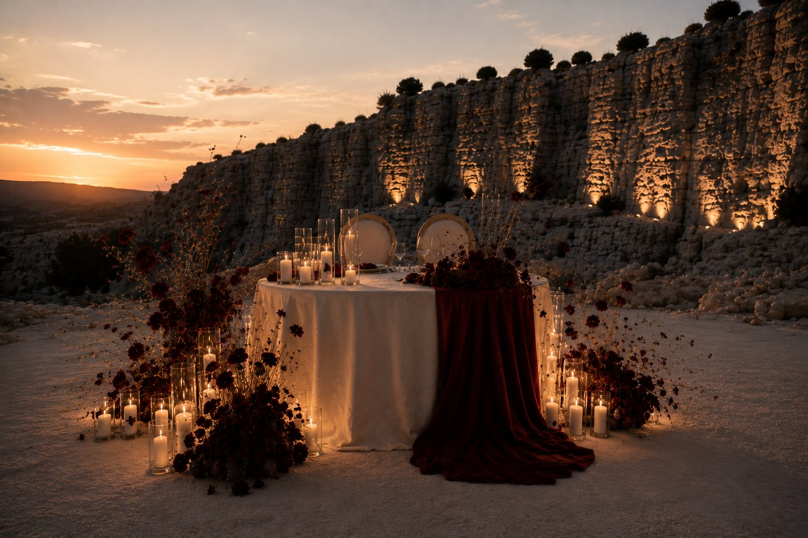
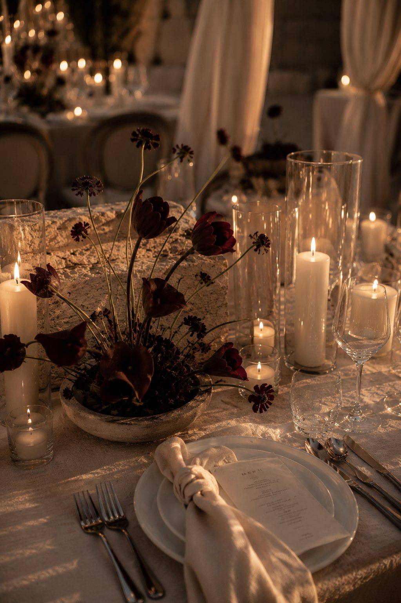
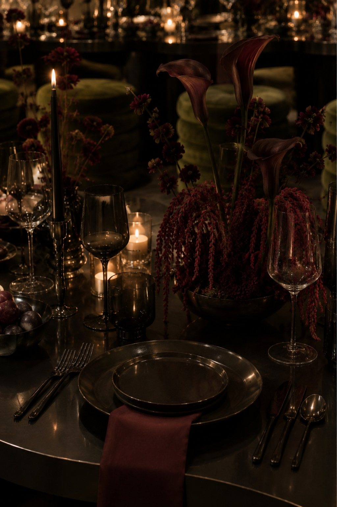
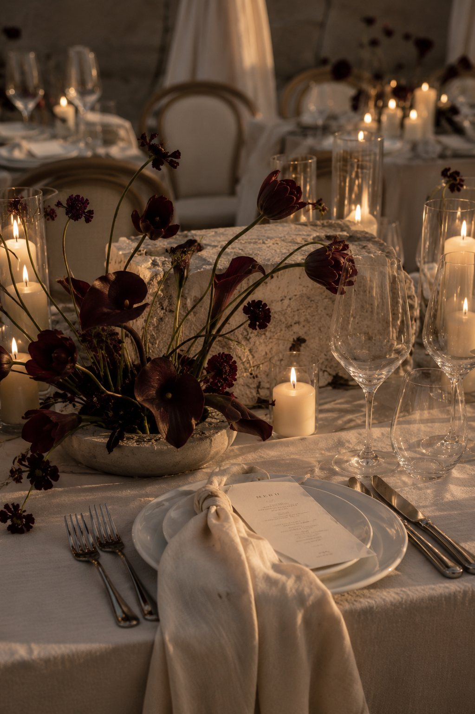
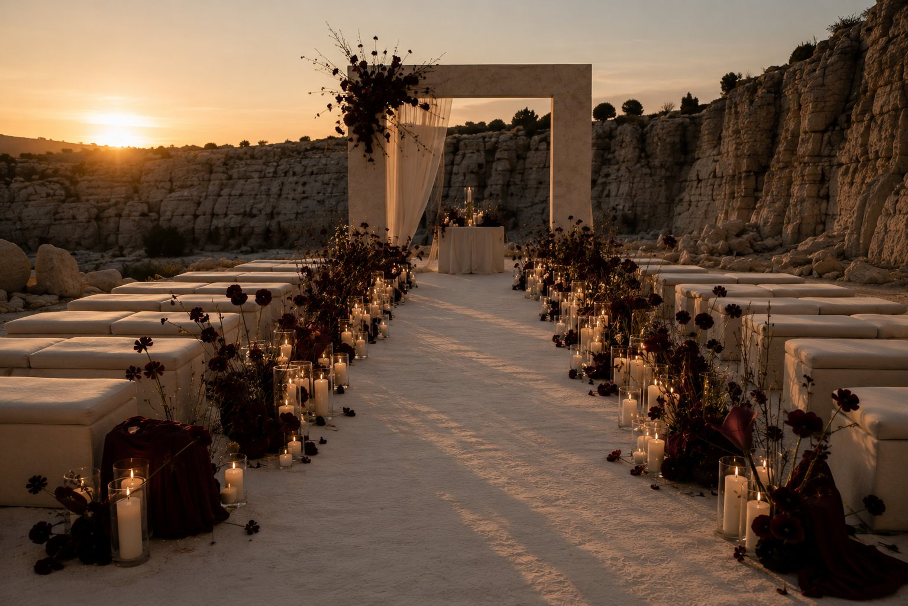

Concept Film




No. 04 - Candlelit Stone Reception
A darker celebration study built through stone, candlelight and deep floral colour. The series stays close to burgundy, ivory, shadow and architectural warmth, so ceremony and table read as one world.
Inquire - atelier@liaarmonia.com
Concept Film



